РАСПРЕДВАЛ > УСТАНОВКА |
| 1. INSTALL CAMSHAFT |
| 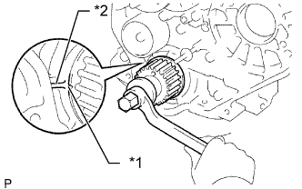 |
Check that the timing mark of the crankshaft timing pulley is in the position shown in the illustration.
| *1 | Timing Mark |
| *2 | Protrusion |
Install the camshaft.
Place the camshaft on the cylinder head with the key groove facing upward.
| 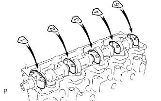 |
Install the 5 bearing caps in their proper locations.
| 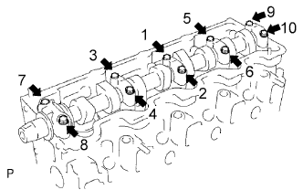 |
Apply a light coat of engine oil to the threads and under the heads of the bearing cap bolts.
Install and uniformly tighten the 10 bearing cap bolts in several steps in the sequence shown in the illustration.
| 2. INSTALL CAMSHAFT OIL SEAL |
| 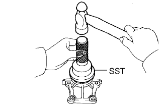 |
Using SST and a hammer, tap in a new oil seal until its surface is flush with the oil seal retainer edge.
Apply MP grease to the lip of the oil seal.
| 3. INSTALL CAMSHAFT OIL SEAL RETAINER |
Install a new gasket and the retainer with the 4 bolts.
| 4. INSTALL NO. 2 TIMING BELT COVER |
Install the timing belt cover with the 4 bolts.
| 5. INSTALL CAMSHAFT TIMING PULLEY |
Install the woodruff key to the key groove of the camshaft.
| 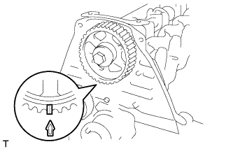 |
Align the timing mark on the camshaft timing pulley with the timing mark on the No. 2 timing belt cover and temporarily install the pulley with the bolt.
| 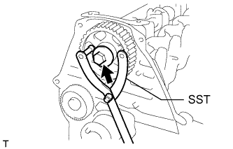 |
Using SST, tighten the bolt.
| 6. SET NO. 1 CYLINDER TO TDC/COMPRESSION |
| 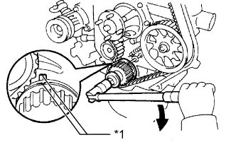 |
Using the crankshaft pulley bolt, align the groove of the crankshaft pulley with the timing pointer by turning the crankshaft clockwise.
| *1 | Timing Mark |
 | Turn |
| 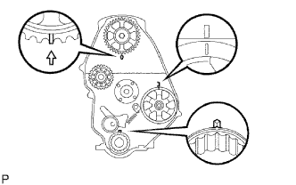 |
Set the timing and drive pulleys at each position.
| 7. INSTALL TIMING BELT |
| 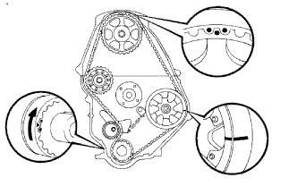 |
Remove any oil or water on each pulley, and keep them clean.
Install the timing belt to the crankshaft timing and timing belt idlers.
| 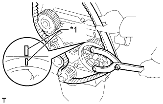 |
Using SST, slightly turn the injection pump drive pulley clockwise. Install the timing belt to the pulley, and align the timing marks of the drive pulley and timing belt case.
| *1 | Timing Mark |
| 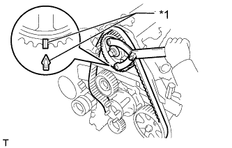 |
Using SST, slightly turn the camshaft timing pulley clockwise. Install the timing belt to the timing pulley, and align the timing marks of the timing pulley and timing belt case.
| *1 | Timing Mark |
Check that the timing belt has tension between the injection pump drive and camshaft timing pulleys.
Install the timing belt to the No. 1 timing belt idler.
 |
Loosen the No. 1 timing belt idler bolt (A), and stretch the timing belt.
Slowly turn the crankshaft pulley.
Tighten the No. 1 timing belt idler bolt.
| 8. CHECK NO. 1 CYLINDER TO TDC/COMPRESSION |
Slowly turn the crankshaft pulley 2 revolutions from TDC to TDC.
| 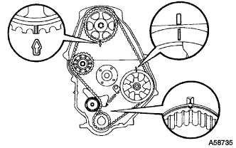 |
Check that the timing marks for each pulley align as shown in the illustration.
If the timing marks do not align, remove the timing belt and reinstall it.
| 9. INSTALL TIMING BELT GUIDE |
| 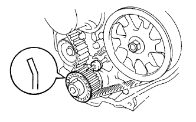 |
Install the timing belt guide with the cup side facing outward.
| 10. INSPECT VALVE CLEARANCE |
| 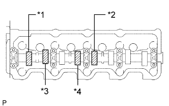 |
Check only the valves indicated in the illustration.
Using a feeler gauge, measure the clearance between the valve lifter and camshaft.
| Item | Specified Condition |
| Intake | 0.20 to 0.30 mm (0.00787 to 0.0118 in.) |
| Exhaust | 0.40 to 0.50 mm (0.0158 to 0.0197 in.) |
| *1 | No. 1 EX |
| *2 | No. 3 EX |
| *3 | No. 1 IN |
| *4 | No. 2 IN |
Record the out-of-specification valve clearance measurements. They will be used later to determine the required replacement adjusting shim.
| 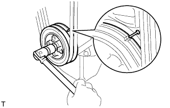 |
Turn the crankshaft 1 revolution (360°) and align the mark as above.
| 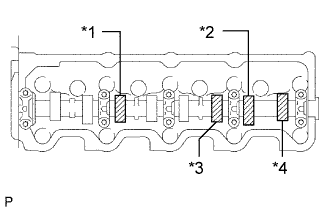 |
Check only the valves indicated in the illustration.
| *1 | No. 2 EX |
| *2 | No. 4 EX |
| *3 | No. 3 IN |
| *4 | No. 4 IN |
Using a feeler gauge, measure the clearance between the valve lifter and camshaft.
| Item | Specified Condition |
| Intake | 0.20 to 0.30 mm (0.00787 to 0.0118 in.) |
| Exhaust | 0.40 to 0.50 mm (0.0158 to 0.0197 in.) |
Record the out-of-specification valve clearance measurements. They will be used later to determine the required replacement adjusting shim.
| 11. ADJUST VALVE CLEARANCE |
| 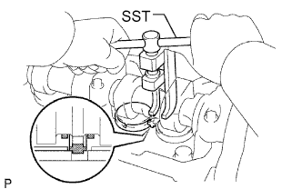 |
Remove the adjusting shim.
Turn the crankshaft so that the cam lobe of the camshaft on the valve being adjusted points upward.
Using SST, press down the valve lifter.
Position the notch of the valve lifter so that it faces the exhaust manifold side.
| 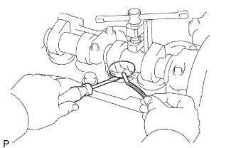 |
Remove the adjusting shim with a screwdriver and magnet hand.
| 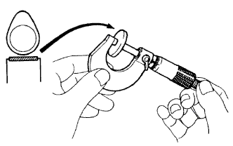 |
Determine the replacement adjusting shim size according to the formula and charts below.
Using a micrometer, measure the thickness of the removed shim.
Calculate the thickness of a new shim so that the valve clearance comes within the specified value.
T = Thickness of removed shim
A = Measured valve clearance
N = Thickness of new shim
| Intake | N = T + (A - 0.25 mm (0.00984 in.)) |
| Exhaust | N = T + (A - 0.45 mm (0.0177 in.)) |
Select a new shim with a thickness as close as possible to the calculated value.
| *1 | Adjusting Shim Selection Chart (Intake) | *2 | Removed shim thickness mm (in.) |
| *3 | Measure clearance mm (in.) | - | - |
| Shim No. | Thickness | Shim No. | Thickness |
| 01 | 2.50 (0.0984) | 46 | 2.95 (0.116) |
| 42 | 2.55 (0.100) | 26 | 3.00 (0.118) |
| 06 | 2.60 (0.102) | 47 | 3.05 (0.120) |
| 43 | 2.65 (0.104) | 31 | 3.10 (0.122) |
| 11 | 2.70 (0.106) | 48 | 3.15 (0.124) |
| 44 | 2.75 (0.108) | 36 | 3.20 (0.126) |
| 16 | 2.80 (0.110) | 49 | 3.25 (0.128) |
| 45 | 2.85 (0.112) | 41 | 3.30 (0.130) |
| 21 | 2.90 (0.114) |
| *1 | Adjusting Shim Selection Chart (Exhaust) | *2 | Removed Shim Thickness mm (in.) |
| *3 | Measure Clearance mm (in.) | - | - |
| Shim No. | Thickness | Shim No. | Thickness |
| 01 | 2.50 (0.0984) | 46 | 2.95 (0.116) |
| 42 | 2.55 (0.100) | 26 | 3.00 (0.118) |
| 06 | 2.60 (0.102) | 47 | 3.05 (0.120) |
| 43 | 2.65 (0.104) | 31 | 3.10 (0.122) |
| 11 | 2.70 (0.106) | 48 | 3.15 (0.124) |
| 44 | 2.75 (0.108) | 36 | 3.20 (0.126) |
| 16 | 2.80 (0.110) | 49 | 3.25 (0.128) |
| 45 | 2.85 (0.112) | 41 | 3.30 (0.130) |
| 21 | 2.90 (0.114) |
Install a new adjusting shim.
Install a new adjusting shim to the valve lifter.
Remove SST.
Recheck valve clearance.
| 12. INSTALL CYLINDER HEAD COVER SUB-ASSEMBLY |
Remove any old packing (FIPG material).
| 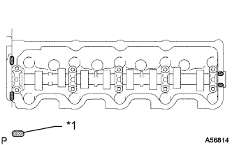 |
Apply seal packing to the cylinder head as shown in the illustration.
| *1 | Seal Packing |
Install the gasket to the cylinder head cover.
Install the cylinder head cover with the 9 bolts and nut. Uniformly tighten the bolts and nut in several steps.
| 13. INSTALL INTAKE PIPE |
Install the intake pipe with the 2 bolts.
Tighten the intake pipe clamp.
| 14. INSTALL TIMING BELT COVER |
| 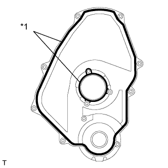 |
Install 2 new gaskets to the timing belt cover.
| *1 | Gasket |
| 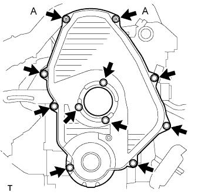 |
Install the timing belt cover with the 11 bolts and washers.
| 15. INSTALL IDLE PULLEY ASSEMBLY |
Install the idle pulley bracket with the 2 bolts.
| 16. INSTALL CRANKSHAFT PULLEY |
Align the key groove of the pulley with the pulley set key, and slide the pulley onto the crankshaft to install it.
| 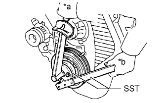 |
Using SST, install the pulley bolt.
| *a | Turn |
| *b | Hold |
| 17. INSTALL VANE PUMP DRIVE PULLEY |
Install the vane pump drive pulley and cooler compressor drive pulley with the 4 bolts.
| 18. INSTALL FAN SHROUD |
Install the fan pulley to the water pump.
Install the shroud together with the coupling fan between the radiator and engine.
Temporarily install the fluid coupling fan to the fan pulley with the 4 nuts. Tighten the nuts as much as possible by hand.
 |
Attach the claws of the shroud as shown in the illustration.
Install the shroud with the 2 bolts.
Install the fan and generator V belt and vane pump V belt (See page Нажмите здесь).
Tighten the 4 nuts of the fluid coupling fan.
| 19. INSTALL RADIATOR RESERVE TANK ASSEMBLY |
Install the radiator reservoir with the 3 bolts.
Connect the radiator reservoir hose to the radiator tank side.
| 20. INSTALL NO. 1 RADIATOR HOSE |
Install the hose clamp with the 2 nuts.
 |
Install the radiator hose.
| *a | Upper |
| *b | RH Side |
| 21. INSTALL WIRING HARNESS CLAMP BRACKET (for LHD) |
Install the wiring harness clamp bracket with the bolt.
| 22. CONNECT WIRE HARNESS |
 |
Attach the 4 wire harness clamps.
Install the generator wire with the nut.
Install the terminal cap.
Connect the generator connector and cooler compressor connector.
| 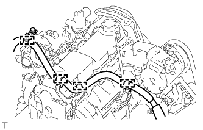 |
for LHD:
Attach the 4 wire harness clamps.
| 23. INSTALL AIR CLEANER CASE ASSEMBLY |
Install the air cleaner case with the 3 bolts.
| 24. INSTALL AIR CLEANER FILTER ELEMENT SUB-ASSEMBLY |
| 25. INSTALL RESONATOR WITH AIR CLEANER CAP SUB-ASSEMBLY |
Вставьте петли крышки воздушного фильтра и шланг в корпус воздушного фильтра, а затем закрепите 4 откидных защелки.
Установите крышку воздушного фильтра и закрепите ее зажимом.
Закрепите зажим жгута проводов.
Подсоедините 2 зажима и разъем.
| 26. INSTALL FRONT FENDER APRON SEAL RH |
Install the front fender apron seal with the 4 clips.
| 27. ADD ENGINE COOLANT |
Затяните пробку сливного крана радиатора вручную.
Затяните пробку сливного крана блока цилиндров.
Медленно заполните систему охлаждающей жидкостью двигателя.
Медленно залейте охлаждающую жидкость в расширительный бачок радиатора до отметки "FULL".
Установите пробку расширительного бачка.
Несколько раз сожмите рукой патрубки радиатора № 1 и № 2, а затем проверьте уровень охлаждающей жидкости. Если уровень охлаждающей жидкости недостаточен, добавьте жидкость.
Установите на место пробку радиатора.
Запустите двигатель и прогрейте его до открывания термостата.
Поддерживайте частоту вращения коленчатого вала двигателя 2000–2500 об/мин.
Несколько раз сожмите патрубки радиатора № 1 и № 2 рукой, чтобы удалить воздух.
Остановите двигатель и подождите, пока охлаждающая жидкость остынет до температуры окружающего воздуха.
Убедитесь, что уровень охлаждающей жидкости находится между отметками "LOW" и "FULL".
Если уровень охлаждающей жидкости ниже линии "Low", повторите все вышеперечисленные действия.
Если уровень охлаждающей жидкости выше уровня "FULL", слейте охлаждающую жидкость до уровня между отметками "FULL" и "LOW".
| 28. CONNECT CABLE TO NEGATIVE BATTERY TERMINAL |
| 29. INSPECT FOR ENGINE COOLANT LEAK |
Fill the radiator with coolant and attach a radiator cap tester to the radiator.
Warm up the engine.
Using a radiator cap tester, increase the pressure inside the radiator to 123 kPa (1.3 kgf/cm2, 18 psi), and check that the pressure does not drop.
If the pressure drops, check the hoses, radiator or water pump for leaks. If no external leaks are found, check the heater core, cylinder block, and cylinder head.
| 30. INSPECT ENGINE IDLE SPEED |
Warm up the engine.
When using the intelligent tester:
Connect the intelligent tester to the DLC3.
| 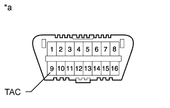 |
When not using an intelligent tester:
Using SST, connect the tachometer test probe to terminal 9 (TAC) of the DLC3.
| *a | Front View of DLC3 |
| 31. INSPECT MAXIMUM ENGINE SPEED |
Start the engine.
Fully depress the accelerator pedal.
Check the maximum speed.
| 32. INSTALL NO. 1 ENGINE UNDER COVER SUB-ASSEMBLY |
 |
Hook the engine under cover to the vehicle body as shown in the illustration.
Install the 4 bolts.
| 33. INSTALL FRONT BUMPER COVER LOWER |
Install the front bumper cover lower with the 5 bolts and clip.
| 34. INSTALL UPPER RADIATOR SUPPORT SEAL |
Установите верхнее уплотнение кронштейна радиатора и закрепите его 13 фиксаторами.